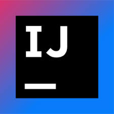

I'm a Math & Computer Science Student @ University of Calgary. I am passionate about Data Science & Analytics.
Hi, I am Aniket Bulusu!
Hi, I am Aniket Bulusu!
Languages & Developer Tools



A Little More of Myself!
As a Math & Computer Science student at the University of Calgary, I strive to become a thought-driven, innovative, and well-rounded individual who is prepared to take on difficult obstacles & challenges. My passions lie within Data Science and Analytics and the courses I have taken at the UofC have helped broaden my knowledge even more through the likes of Data Processing & Storage, Data Visualization, and Data Structures & Algorithms. Thus, I want to further immerse myself in the data science field and leverage my skills to solve real-world problems, drive innovation, and contribute to impactful projects that make a difference.
Work Experience
Programming Instructor

I am currently employed at Minds in Motion as a Programming Instructor, where I teach youth how to code in Python. This role not only equips individuals with essential coding skills but also promotes deep learning through immersive, project-based experiences.
Usher
I worked on the Tickets & Information Team, scanning tickets efficiently and effectively. I was also attentive to customer problems and needs, helping to ensure a smooth and satisfying experience.
Camp Counselor
As a Youth Activity Coordinator at Remington YMCA in Calgary, I designed and implemented engaging games and activities to promote children's physical and emotional development. I fostered a positive and supportive environment, ensuring the safety and enjoyment of recreational areas for children aged 8 to 13 through attentive supervision and assistance.